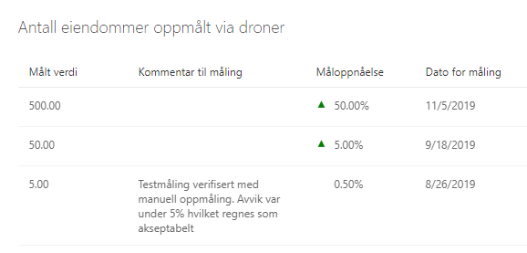

- Knappen benyttes for å eksportere listen til Excel. Hvis du har filtrert listen for å se på spesifikke prosjekter, er det kun de du ser som vil bli eksportert ut. Pass derfor på at eventuell filtrering er i tråd med det du ønsker å eksportere, og tilbakestill filtre om du ønsker å eksportere en oversikt over samtlige prosjekt.
- Knappen benyttes for å eksportere listen til Excel. Hvis du har filtrert listen for å se på spesifikke prosjekter, er det kun de du ser som vil bli eksportert ut. Pass derfor på at eventuell filtrering er i tråd med det du ønsker å eksportere, og tilbakestill filtre om du ønsker å eksportere en oversikt over samtlige prosjekt.
Bruk søkefeltet for å finne gevinster på bakgrunn av alle tilgjengelige felter.
I denne delen finner du selve oversikten:
-
Hver linje er en gevinst, du kan også gå til gevinsten i prosjektrommet ved å trykke på tittelen til gevinsten.
-
Ved å klikke på kolonneoverskriften kan du velge å gruppere på enkelte kolonner. (Hvilke kolonner du kan gruppere på er styrt av oppsettet av ‘Prosjektkolonner’ som du finner igjen i menyvalget Konfigurasjon av Prosjektportalen i Områdeinnstillinger på porteføljenivå)
-
Negativ eller positiv utvikling i måloppnåelse vil indikeres med røde eller grønne triangler.
-
Helt til høye på hver enkelt gevinstlinje kan du velge å vise målingene som ligger til grunn på den enkelte gevinst:
